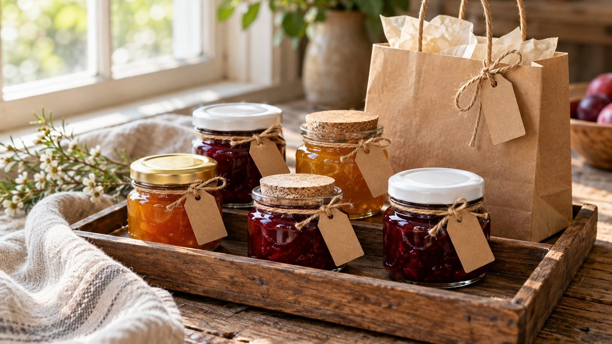

Lembrancinha de geleia: como montar com pote de 40 ml

Lembrancinha boa é a que o convidado leva pra casa sem esforço e usa de verdade. Geleia em pote pequeno cumpre as duas coisas: cabe na mão, combina com o café da manhã do dia seguinte e deixa espaço de sobra pra personalizar. Veja como montar uma do começo ao fim, tendo o pote de 40 ml como ponto de partida.
Por que 40 ml funciona pra lembrança
O Pote Geleinha 40 ml mede 42,5 mm de diâmetro por 50 mm de altura, e o pote vazio pesa 50 g. Na prática, ele cabe numa sacolinha de papel, numa caixinha ou amarrado a um cartão, e ninguém sai da festa carregando peso. Por ser uma porção pequena, também dá pra variar o sabor entre as lembranças sem montar uma operação gigante.
A tampa conta metade da história
A Geleinha tem tampa twist-off em azul, branca, dourada, preta e rosa, além de uma versão com rolha de cortiça. A cor da tampa é a primeira coisa que o convidado vê, então vale partir da paleta da festa: dourada pra uma cerimônia mais clássica, branca pra um visual limpo, rolha pra um clima rústico, de campo. Os guias de lembrança de casamento apontam justamente o conceito rústico e os sabores regionais como combinação natural pra geleia e doce de fruta.
Escolha o sabor pensando em quem vai comer
Morango, uva, framboesa, amora, pêssego e maçã com canela estão entre os sabores mais vendidos de geleia artesanal. Se a lembrança vai pra muita gente, um sabor clássico agrada mais gente. Se vai pra poucos convidados, dá pra ousar com uma fruta regional, ou até acompanhar o gosto de quem faz a festa.
Faça um pote de teste antes de produzir o lote: olhe a cor da geleia contra a luz do dia e prove. Se a textura sair mole, veja por que a geleia caseira não engrossa antes de seguir.
Etiqueta, fita e cartão
É a personalização que transforma o pote em lembrança. Algumas ideias que funcionam bem:
- Etiqueta com o nome do evento e a data, em letra legível. O pote tem 50 mm de altura, então o texto precisa ser curto. Imprima uma prova e confira o tamanho antes de fazer tudo.
- Fita ou barbante na tampa, com um cartãozinho de agradecimento. Dá pra pedir o cartão na mesma gráfica dos convites, pra manter o visual.
- Uma sacolinha de papel ou uma caixinha individual, se a festa pede um acabamento mais caprichado.
Quantas lembrancinhas fazer
O número parte da lista de convidados, e a conta é sua: um pote por pessoa, um por casal ou um por família. Sempre separe alguns potes a mais, pra teste, imprevisto e algum presente de última hora.
Se for enviar pelo correio
Quem manda a lembrança pra convidados de outra cidade precisa pensar na caixa. O passo a passo de como embalar pote de vidro com mel pra não vazar no transporte vale pra qualquer pote: camadas, enchimento e nada solto dentro da caixa.
Já escolheu o pote? Veja a Geleinha 40 ml no site ou fale com a gente pelo WhatsApp pra tirar dúvida sobre quantidade.